Kinetixis AI Merger: a model merger that needs no code.
KinetixisMM by Kinetixis is a Windows model merger. It blends two or more AI models into one, or keeps whichever model does better at your task for each part. It runs on your computer, so your models never leave it.
20 methods, from a simple average to SLERP, TIES, DARE and DELLA. Set how much of each model you want, even layer by layer.
Pick the better model for your task
Give it examples of the skill you care about. It tests both models and keeps the better one for each layer. No averaging.
Tools around it
Apply or extract LoRA adapters, stack layers from different models, and check how well two models fit before you merge.
What is the Kinetixis AI Merger?
Kinetixis makes KinetixisMM, an AI model merger for Windows. A model merger combines the weights of several trained models into a single new model, so you can mix their strengths without training from scratch. KinetixisMM supports many merge methods, works layer by layer on large models, and keeps your originals untouched.
How it works
Choose your models. Shards and common formats work: .safetensors, .pt, .pth, .bin, .ckpt.
Pick a method, or press Check compatibility or Analyze models first.
Press Merge models. You get a new model file next to your first one, plus a report. Your originals are never changed.
A merge can turn out worse than either original model. The analysis and the held-back check in task mode help, but always test the result.
Average and spherical: linear, SLERP, NuSLERP, Multi-SLERP, Karcher mean.
Fine-tune based (needs the original base model): Task arithmetic, TIES, DARE-linear, DARE-TIES, DELLA, DELLA-linear, Breadcrumbs, Breadcrumbs-TIES, SCE, RAM, RAM+.
Specialised: Model Stock, Nearswap, Arcee Fusion, Passthrough (convert or rescale one model).
Pick the best per task
Provide a file of examples (prompt and answer, or plain text). The app scores both models on them, starts from the better one, and swaps in the other model’s layers only where that improves the score. A share of your examples is held back to check the result on data it didn’t choose from.
Needs model folders with their tokenizer, and enough RAM to load Model A (about 4 bytes per parameter on the standard CPU build).
Other tools
Apply one or more LoRA adapters to a model, or extract an adapter from a fine-tune.
Stack layers from several models (for example A[0:20] B[10:30]) to build a deeper or shallower model.
Per-layer blending, rules that treat parts of the model differently, and weight-size restoration.
Built for big files
Works layer by layer, so memory use stays low however large the models are.
Cancel any time and continue later from where it stopped.
Checks that two models fit, flags broken numbers, and verifies the saved file.
Writes an HTML report with plain-language suggestions.
Opens .pt and .ckpt files in a safe mode that doesn’t run code from the file.
Merges offline. Signing in needs the internet at first and about every 14 days.
Good to know
Windows 10 and 11 (64-bit) only. The standard build runs on the CPU. Merging works best on models of the same family and size.
At checkout, enter the email address you want to use for your KinetixisMM account. You create your account with that email before paying, and your download starts as soon as payment is confirmed.
Secure checkout by Razorpay. Prices are in Indian Rupees and include applicable taxes. Includes updates and fixes for this major version at our discretion; new major versions may be sold separately.
Before you buy
Windows 10 or 11, 64-bit. Not available for Mac or Linux.
Free disk space about the size of the model you create.
Merging uses little memory. Task mode needs enough RAM to load one model.
All sales are final. Please read these requirements and the refund policy before you buy.
Getting started
Run the installer or KinetixisMM.exe and accept the license agreement.
Sign in with the email and password of your account (from your purchase email). Wait until the status line says “Ready.”
Choose Model A and Model B. Pick all the shard files of a model, or just one.
Pick a method. Methods that need a base model show an extra box for it.
Press Check compatibility. It tells you if the two models fit.
Press Merge models. The result is saved next to Model A as merged_model.safetensors (or a merged_model folder if your model came in a folder with config.json).
The report (.report.html or merge_report.html) opens from the Open report button. To stop, press Cancel. Press Merge again to continue.
The full user guide, the license agreement and the third-party notices are installed with the app (Start menu, KinetixisMM) and under About / Legal in the app.
Task examples file
A .jsonl or .json file with prompt and completion (or question/answer, input/output, text), or a .txt file with examples separated by blank lines. Use dozens of varied examples; a handful mostly picks noise.
Troubleshooting
“The merge engine could not start”
Read the message and KinetixisMM_error.log next to the app. If it mentions “x86-64-v2” or “baseline optimizations”, the processor is too old for that build. If it mentions a DLL, install the Microsoft Visual C++ Redistributable (x64) and restart. Close all KinetixisMM windows first.
Windows says “unrecognized app”
Unsigned programs can trigger SmartScreen. Choose More info, then Run anyway, if you downloaded it from this site.
“Models don’t share the same layers”
The two models have different architectures or sizes. Merge models from the same family and size.
It stopped unexpectedly or ran out of memory
Close other programs and try again. Merging resumes where it stopped. Task mode needs more RAM than a normal merge.
The merged model gives poor answers
Try Analyze models, a different method, or a smaller blend. Merging doesn’t guarantee quality, so test with your own prompts.
Questions
Does it need the internet?
Only to sign in to your account: at first, and at least every 14 days. Merging itself works offline, and your models and files are never uploaded.
Which models work?
Models with matching layers and sizes, in the formats listed above. It is aimed at transformer language models. Image-model checkpoints with identical layouts can be merged weight by weight, but are less tested, and task mode is for language models only.
Do I need a GPU?
No. The standard build uses the CPU.
Will the merged model be better?
Not guaranteed. Task mode measures quality on your examples. Other methods don’t, so test the result.
Can I use merged models commercially?
That depends on the licenses of the models you merge. You are responsible for following them.
Is it open source?
No. KinetixisMM is closed-source commercial software, sold under a license agreement. It includes third-party components under their own licenses, credited in the third-party notices.
Is it a subscription?
No. It’s a one-time payment of ₹1,299, with no subscription.
Can I get a refund?
All sales are final because the app is delivered digitally straight away. There are a few exceptions, for example if you were charged twice or can’t get the app to run on a supported computer. See the refund policy.
Grievance officer: Arjan Anant, CEO, email arjan@kinetixis.com. We acknowledge complaints within 48 hours and aim to resolve them within 30 days.
Refund policy
Last updated November 19, 2026
KinetixisMM is digital software that is delivered electronically straight after payment. For this reason all sales are final: we do not offer refunds, returns, exchanges or cancellations once an order is paid, including if you change your mind or if the Software, or the models you create with it, do not meet your expectations.
1. Please check before you buy
Please read the product description, the system requirements (Windows 10 or 11, 64-bit; internet access to sign in) and the user guide on our website. Merging results depend on your models and settings and are not guaranteed. If you have a question before buying, email arjan@kinetixis.com and we will reply within 7 days.
2. When we will fix the problem or refund you
We will fix the problem, or refund you if we cannot, in these cases:
You were charged more than once for the same order, or were charged an incorrect amount.
You paid but could not download the Software or access your account, and we are unable to fix it.
The Software cannot be installed or started on a computer that meets the stated requirements, and our support cannot solve the problem within 14 days of your first message.
Please email arjan@kinetixis.com within 7 days of the problem, from the address you used to buy, with your order number, a description of the problem and the file KinetixisMM_error.log if there is one. We reply within 7 days.
3. How refunds are paid
Approved refunds are sent through Razorpay to the original payment method, usually within 5 to 10 business days, depending on your bank.
Your license ends when a refund is paid, and you must uninstall and delete the Software.
4. Your legal rights
This policy does not reduce any rights you have under the law, including consumer rights where a product is defective or not as described. Where the law allows, you agree that delivery begins immediately after payment and that you therefore give up any right to cancel or withdraw from the purchase.
Privacy policy
Last updated November 19, 2026
Kinetixis, Kawardha, Chhattisgarh, India (“we”, “us”) is responsible for the personal data described here. Contact: arjan@kinetixis.com
1. What stays on your computer
Your models, files, settings, merged results and reports never leave your computer. The app contains no analytics or telemetry. Files it creates, and an error log named KinetixisMM_error.log, stay on your computer. We only see an error log if you choose to send it to us.
2. Your account and signing in
To use the app you sign in with a KinetixisMM account. When you sign in or when the app renews your sign-in, it sends to our sign-in server over an encrypted connection: your account email address and password (to check them), a random identifier of your computer, your computer name, and the app version. Our server keeps: your email address; your password only as a salted hash, never in readable form; the identifier and name of each computer you use; the time and result of sign-ins; and the IP address of the request, for security and to limit repeated attempts. We use this to let you in, to enforce the limit of 3 computers per account, to protect accounts against guessing and abuse, and to provide support (contract and legitimate interests). The app stores a signed sign-in token and, if you choose to stay signed in, your email address on your computer. It never stores your password.
3. This website
The website sets no cookies and has no analytics. Our hosting provider may keep standard server logs, such as IP address, browser type and pages requested, for security and operation.
4. Purchases
Payments are handled by Razorpay, a third-party payment service. It collects your name, email address, phone number, billing details and payment details (card, UPI, net banking or wallet) under its own privacy policy. We receive your name, email address, phone number (if you give it) and order details; we never see your full card number or UPI PIN. We use this data to create your account, deliver the Software, provide support, keep records and meet tax and legal duties (contract and legal obligation).
5. Support and how long we keep data
If you email us, we use your message and contact details to reply and to improve the product. We keep data only as long as needed:
Account data (email address and the computers you used): while your account is active, and for up to 3 years after your last use, to handle support requests, refunds and disputes.
Sign-in records (time, result and IP address): up to 12 months.
Support emails: up to 3 years after the issue is closed.
Purchase and tax records: up to 8 years, as Indian tax and company law require.
After that we delete or anonymise the data. You can ask us to delete your account earlier (see section 8).
6. Sharing
We do not sell your personal data. We share it only with providers that help us run the business, such as the payment provider and hosting and email services, and where the law requires it. Some providers may process data outside your country, under appropriate safeguards where the law requires them.
7. Security
We use reasonable measures to protect the data we hold, including encrypted connections and hashed passwords. No system is completely secure.
8. Your rights
Depending on where you live, you may have the right to access, correct, delete or export your data, to object to or restrict its use, and to complain to your local data protection authority. Email arjan@kinetixis.com to use these rights. If you are in India, you also have the rights given by the Digital Personal Data Protection Act, 2023, including to access, correct and erase your data and to complain. Our grievance contact is arjan@kinetixis.com. We acknowledge complaints within 48 hours and aim to resolve them within 30 days. Deleting your account ends your license. We will respond within the time the law requires.
9. Children
KinetixisMM is not directed at children under 16 and we do not knowingly collect their data.
10. Changes
We may update this policy. The date at the top shows the latest version.
Terms of sale
Last updated November 17, 2026
These terms apply when you buy KinetixisMM from Kinetixis, Kawardha, Chhattisgarh, India. The license to use the Software is in the End User License Agreement (EULA), which you also accept.
1. Product and price
You are buying a license to KinetixisMM for Windows 10 and 11 (64-bit). The price is INR 1,299 (Indian Rupees), paid once, and includes applicable taxes unless the checkout page shows otherwise. It is not a subscription. Your purchase includes the version you download and any updates and fixes for that major version (for example 1.x) that we choose to release. Updates are at our discretion and we are not obliged to release any. New major versions may be sold separately.
2. Taxes and payment
Prices are in Indian Rupees (INR). Goods and Services Tax (GST) and other taxes are included in the price or shown at checkout, where they apply. Payment is processed by Razorpay, a third-party payment service. Kinetixis is the seller. Razorpay’s terms apply to the payment itself, and Kinetixis never sees your full card number or UPI PIN.
3. Delivery
The Software is delivered electronically. You create your KinetixisMM account on our website before paying. As soon as your payment is confirmed, the download starts automatically and you receive a receipt by email. You can sign in at any time to download again. You need the account to use the Software. If the download does not start within a few minutes of paying, contact us.
4. Your license
Your license starts when payment is complete and is governed by the EULA. Signing in needs an internet connection, as described in the EULA.
5. Refunds and cancellations
All sales are final. KinetixisMM is digital software that is delivered immediately after payment, so orders cannot be cancelled or returned once paid. Refunds are limited to the cases listed in the Refund and Cancellation Policy, for example a double charge or non-delivery. Where the law gives you additional rights, those rights apply.
6. Chargebacks
If you have a problem, please contact us first at arjan@kinetixis.com so we can help. Disputed payments may lead to your license being suspended while the dispute is open.
7. Changes
We may change prices or these terms for future sales. Changes do not affect a purchase you have already completed.
8. Governing law
These terms are governed by the laws of India, and the courts at Kawardha, Chhattisgarh, India have jurisdiction over disputes, except that consumers keep any mandatory rights of their country of residence.
9. Contact
Kinetixis, Kawardha, Chhattisgarh, India. Email: arjan@kinetixis.com. Complaints: write to the same address. We acknowledge them within 48 hours and aim to resolve them within 30 days.
Third-party notices
KinetixisMM is proprietary, closed-source software owned by Kinetixis. It includes third-party components that remain under their own licenses. Those licenses require the credits below, and the full license texts are in the file THIRD-PARTY-NOTICES.txt that ships with the app. Thank you to their authors.
Python is included under the Python Software Foundation License, Tcl/Tk under its BSD-style license, and the packaging tool PyInstaller under GPL-2.0-or-later with its bootloader exception, which allows the packaged program to be distributed under any license.
annotated-doc 0.0.6 – MIT
annotated-types 0.8.0 – MIT
anyio 4.16.0 – MIT
click 8.5.1 – BSD-3-Clause
customtkinter 6.0.0 – Creative Commons Zero v1.0 Universal
darkdetect 0.8.0 – BSD-3-Clause
exceptiongroup 1.3.1 – MIT License
filelock 4.2.9 – MIT
fsspec 2026.9.0 – BSD-3-Clause
h11 0.16.0 – MIT
hf-xet 1.8.0 – Apache-2.0
httpcore2 2.16.0 – BSD-3-Clause
httpx2 2.16.0 – BSD-3-Clause
huggingface_hub 2.4.0 – Apache-2.0
idna 3.20 – BSD-3-Clause
Jinja2 3.1.6 – BSD License
markdown-it-py 4.3.0 – MIT License
MarkupSafe 3.0.4 – BSD-3-Clause
mdurl 0.1.2 – MIT License
mpmath 1.4.1 – BSD-3-Clause
networkx 3.7 – BSD-3-Clause
numpy 2.5.4 – BSD-3-Clause AND 0BSD AND MIT AND Zlib AND CC0-1.0
packaging 26.3 – Apache-2.0 OR BSD-2-Clause
pydantic 2.14.3 – MIT
pydantic_core 2.50.4 – MIT
Pygments 2.21.0 – BSD-2-Clause
PyYAML 6.0.3 – MIT
regex 2026.11.15 – Apache-2.0 AND CNRI-Python
rich 15.0.0 – MIT
safetensors 0.8.0 – Apache Software License
setuptools 84.2.1 – MIT
shellingham 1.5.4 – ISC License
sympy 1.14.0 – BSD
tokenizers 0.23.3 – Apache Software License
tomli 2.5.0 – MIT
torch 2.14.1 – Apache-2.0 AND Apache-2.0 WITH LLVM-exception AND BSD-2-Clause AND BSD-3-Clause AND BSL-1.0 AND MIT
tqdm 4.70.1 – MPL-2.0 AND MIT
transformers 5.23.0 – Apache 2.0 License
truststore 0.10.5 – MIT
typer 0.29.1 – MIT
typing_extensions 4.16.0 – PSF-2.0
typing-inspection 0.4.5 – MIT
The merge methods are based on published research and public documentation. KinetixisMM is independent and is not affiliated with MergeKit, Arcee AI, Hugging Face or any model publisher. All trademarks belong to their owners.
License agreement (EULA)
Version 1.1 - Last updated November 19, 2026
IMPORTANT: Please read this agreement carefully. By installing, copying or using KinetixisMM (the “Software”), or by clicking “Accept”, you agree to be bound by it. If you do not agree, do not install or use the Software.
1. Parties
This agreement is between you (the individual or organization that purchased the Software) and Kinetixis, Kawardha, Chhattisgarh, India (“Kinetixis”, “we”, “us”).
2. License grant
Subject to this agreement and payment of the purchase price, Kinetixis grants you a non-exclusive, non-transferable, non-sublicensable, revocable license to install and use one copy of the Software, in object-code form, for your internal personal or commercial purposes, on computers that you own or control. One license covers one person. Organizations must buy one license per user.
Account and sign-in. Using the Software requires a KinetixisMM account that we create for your purchase. You must sign in with the account’s email address and password, keep them confidential, and not share them. One account may be used on up to 3 computers at the same time. Signing in needs an internet connection the first time and at least every 14 days; between sign-ins the Software works offline. We may suspend or end an account that breaches this agreement.
3. Restrictions
You may not, and may not allow anyone else to:
copy, sell, rent, lease, lend, sublicense, distribute or share the Software, your license, or your download link, except for one backup copy;
reverse engineer, decompile, disassemble or try to obtain the source code of the Software, except to the extent that applicable law allows it despite this restriction or a third-party license requires it;
modify the Software or create derivative works of it, or remove or change any copyright, trademark or license notice;
circumvent any technical limit of the Software, or use it in breach of law or third-party rights.
4. Ownership; closed source
The Software is proprietary, closed-source software. Kinetixis and its licensors own all rights, title and interest in it, including its source code, which is not provided to you and which you have no right to receive. The Software is licensed, not sold. We reserve all rights not expressly granted.
5. Third-party components
The Software includes third-party components that are licensed to Kinetixis under their own terms. They are listed, with their license texts, in the file THIRD-PARTY-NOTICES.txt and on our website. Nothing in this agreement limits any rights you have under those licenses for those components.
6. Your models, data and outputs
The Software works on AI models and other files that you supply. You are solely responsible for having the right to use, copy, modify and combine them, and for following their licenses (including any use restrictions). Kinetixis does not provide, review or endorse any model. Subject to those licenses, you own the files the Software creates for you. Merged or modified models can be inaccurate, biased or unsafe, and results are not guaranteed: test them before relying on them.
7. Privacy
The Software runs on your computer. To sign in, it sends your account email and password, a random identifier of your computer, the computer name and the Software version to our sign-in server. It does not send your models, files, settings or usage data. See the Privacy Policy for details.
8. Updates and support
We may, but are not obliged to, release updates, fixes or new versions. Updates and fixes for the major version you bought (for example 1.x) that we choose to release are included at no extra charge. We may charge for new major versions, may change, add or remove features, and may stop supporting or distributing any version on reasonable notice. Support is provided by email at arjan@kinetixis.com, is limited to the current version, and is given on a reasonable-efforts basis with a first reply within 7 days.
9. Term and termination
This agreement lasts until terminated. You may end it at any time by uninstalling and deleting the Software. We may terminate it if you materially breach it and do not fix the breach within 14 days of notice (immediately for a breach of section 3). On termination you must stop using the Software and delete all copies. Sections 3 to 6 and 10 to 14 survive termination.
10. Disclaimer of warranties
TO THE MAXIMUM EXTENT PERMITTED BY LAW, THE SOFTWARE IS PROVIDED “AS IS” AND “AS AVAILABLE”, WITHOUT WARRANTY OF ANY KIND, EXPRESS OR IMPLIED, INCLUDING WARRANTIES OF MERCHANTABILITY, FITNESS FOR A PARTICULAR PURPOSE, ACCURACY, NON-INFRINGEMENT, OR THAT THE SOFTWARE WILL BE UNINTERRUPTED OR ERROR-FREE OR THAT ANY MODEL IT CREATES WILL PERFORM AS EXPECTED. Some places do not allow these exclusions, so they may not apply to you.
11. Limitation of liability
TO THE MAXIMUM EXTENT PERMITTED BY LAW, KINETIXIS WILL NOT BE LIABLE FOR ANY INDIRECT, INCIDENTAL, SPECIAL, CONSEQUENTIAL OR PUNITIVE DAMAGES, OR FOR LOST PROFITS, LOST DATA OR BUSINESS INTERRUPTION, EVEN IF ADVISED OF THEIR POSSIBILITY. OUR TOTAL LIABILITY FOR ALL CLAIMS RELATING TO THE SOFTWARE WILL NOT EXCEED THE PRICE YOU PAID FOR IT. Nothing in this agreement limits liability that cannot be limited by law, such as for fraud or for death or personal injury caused by negligence, or your statutory consumer rights.
12. Export and compliance
You must follow all export-control and sanctions laws that apply to your use of the Software and must not use it where it is prohibited.
13. Governing law
This agreement is governed by the laws of India, without regard to conflict-of-law rules, and the courts at Kawardha, Chhattisgarh, India have exclusive jurisdiction, except that consumers keep any mandatory rights of their country of residence.
14. General
This is the entire agreement about the Software and replaces earlier understandings. If a part is unenforceable, the rest stays in force. Not enforcing a right is not a waiver of it. You may not assign this agreement without our written consent; we may assign it to a successor. We may update this agreement for future versions of the Software; the version delivered with your copy applies to it.
KinetixisMM is digital software. Nothing is shipped, and there are no shipping charges or customs duties.
1. How you receive it
You create your account before paying. Within a few minutes of a successful payment your download starts automatically on the confirmation page, and we email you a receipt. Please use the same email address you used for your account when you pay.
2. If the email does not arrive
Check your spam folder first. If nothing has arrived 24 hours after your payment, write to arjan@kinetixis.com with your payment reference and the email address you used, and we will send it again. We reply within 7 days.
3. What you need
A Windows 10 or 11 (64-bit) computer, and an internet connection to download the software and to sign in.
4. Delivery area
Worldwide, wherever the payment is accepted. Delivery is electronic only.
About us
KinetixisMM is made by Kinetixis, based in Kawardha, Chhattisgarh, India. It is a Windows program that combines AI models on your own computer: you pay once, your models stay on your computer, and you can always reach us by email.
Follow these steps on your Windows 10 or 11 PC. It takes about five minutes. After you pay, the download starts by itself.
Create your account and pay
On the pricing page, click Buy now and create an account with your email and a password. Open the confirmation link we email you, then pay with Razorpay. Use the same email at payment as your account email, so we can match your payment.
Wait for the download
As soon as your payment is confirmed, your browser starts downloading KinetixisMM.exe. You will see it appear in your browser’s download list. If your browser asks whether to keep the file, choose Keep.
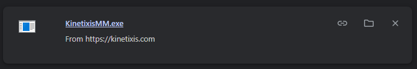
The download did not start? Go to kinetixis.com, sign in, and press Download the app.
Open the downloaded file
Click the downloaded file in your browser, or open your Downloads folder and double-click KinetixisMM.exe.
If Windows says “Windows protected your PC”, click “More info”
Windows shows this blue screen for any new app that is not yet widely downloaded. It is not an error. Click the More info link, not the “Don’t run” button.
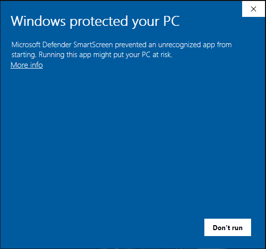
Click “Run anyway”
A new button appears. The publisher shows as “Unknown publisher” because we have not yet bought a Windows code-signing certificate. Only run the file if you downloaded it from kinetixis.com. Then click Run anyway.
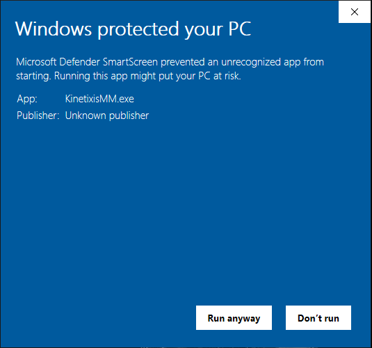
Sign in
Enter the email and password of your KinetixisMM account, the same ones you made on this website. Press Show to check your password as you type. Leave “Keep me signed in on this computer” ticked if you do not want to sign in every time. Then press Sign in.
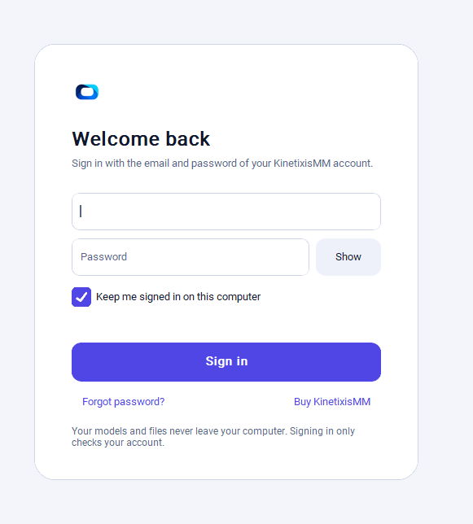
Your models and files never leave your computer. Signing in only checks your account.
Start merging
When the main window opens and the bottom of the window says Ready., the app is set up. To merge two models:
Stay on the Merge tab at the top.
Under Model A, press Choose file(s)… and select your first model. Do the same for Model B. Model B must have the same architecture and size as Model A.
Pick a Method and use the slider to set how much of each model to keep.
Press Check compatibility, then Merge models.
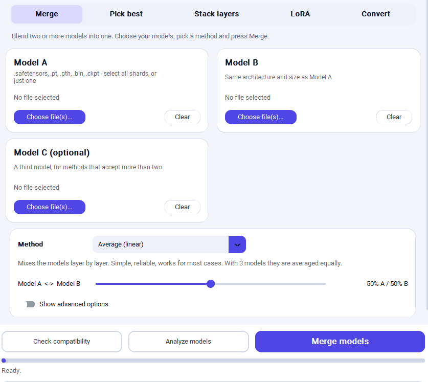
Something went wrong?
I can’t find “Run anyway”. Click More info on the blue screen first. The button only appears after that.
The download did not start. Sign in at kinetixis.com and press Download the app. If the button says Buy, your payment is not yet linked to your account email.
The app will not sign in. Use the email and password from the website. Press Forgot password? if you do not remember it.
The app says the engine could not start. Email arjan@kinetixis.com and attach the file KinetixisMM_error.log that the app saves next to the .exe.
A guide to every tab and every method in the app: what it does, and when to use it. If you have not installed the app yet, start with how to download and install.
The basics
Merging combines models that are already trained into one new model, so you can mix their strengths without training anything. KinetixisMM runs on your computer, and your models and files never leave it. At the top of the window there are five tabs: Merge, Pick best, Stack layers, LoRA and Convert. Each one does a different job.
Words you will see
Model file. Pick .safetensors, .pt, .pth, .bin or .ckpt files. If a model is split into several parts (shards), select all the parts, or just one.
Same architecture and size. To merge two models, Model B must be built the same way and be the same size as Model A. A model with 7 billion parameters cannot be merged with one that has 13 billion.
Fine-tune. A model that was trained further from an original model.
Base model. The original model that your fine-tunes started from. Some methods need it. When a method needs it, a Base model box appears.
The three buttons at the bottom
Check compatibility. Tests whether your models can be merged and estimates the size of the result. It says “Compatible – ready to merge.” when all is well. Always press it first.
Analyze models. Studies your models and saves a report with suggestions you can read in your browser.
Merge models. Starts the job. A progress bar shows how far it is, and you can press the button again to cancel. When it finishes, the result is saved next to Model A with a name like merged_model.safetensors. If Model A is inside a model folder (one with a config.json), a new merged_model folder is created beside it. Your original files are not changed.
Merge tab: blend two or more models
This is the main tab. It blends two or more models into one. Choose your models, pick a method, and press Merge models.
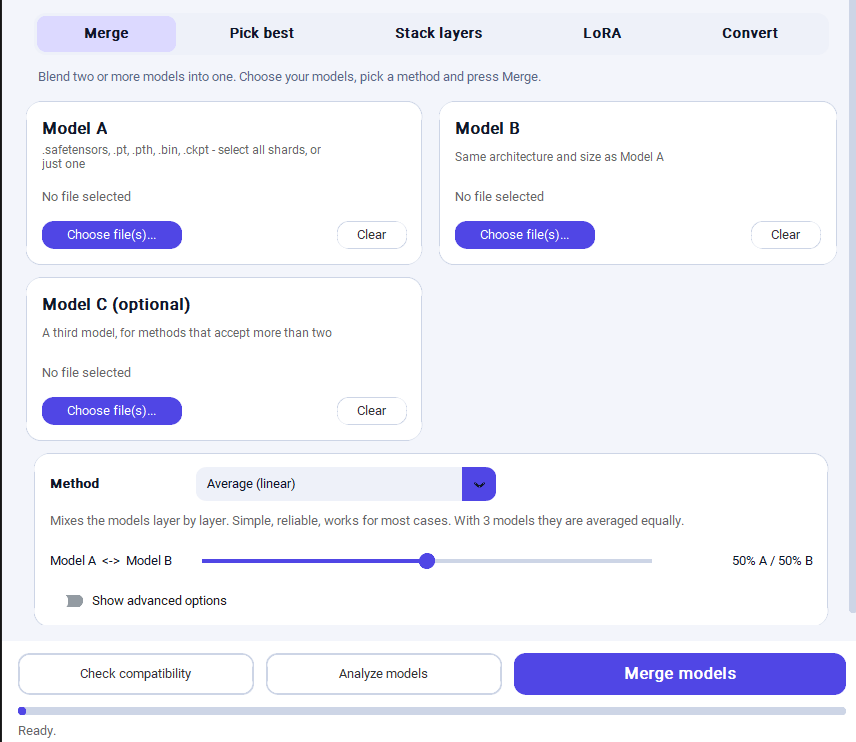
The Merge tab.
Under Model A and Model B, press Choose file(s)…. Model C is optional and only works with methods that accept more than two models. Clear removes a choice.
Pick a Method. A short explanation appears under it, and the sliders change to fit the method.
Set the slider. For most methods, Model A ⟷ Model B sets the mix, for example 50% A / 50% B.
Press Check compatibility, then Merge models.
The merge methods
Open the Method list to see them all. If you are not sure, start with Average (linear) at 50%, and try SLERP after.
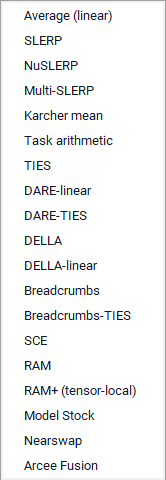
The Method list.
Quick chooser
I want to…
Go to
Blend two models and see what happens
Merge tab, Average (linear) or SLERP
Combine the skills of several fine-tunes of one base model
Merge tab, Task arithmetic, TIES, DARE or DELLA (add the base model)
Combine three or more models
Merge tab, Average, Multi-SLERP or Karcher mean
Keep Model A and only add a little of Model B
Merge tab, Nearswap or Arcee Fusion
Take, for each part, whichever model does better on my own examples
Pick best tab
Build a model from layer ranges of other models
Stack layers tab
Put a LoRA adapter into a model, or make a LoRA from a fine-tune
LoRA tab
Change a model’s file type or make it smaller
Convert tab
Methods that do not need a base model
These blend the models directly. Just choose Model A and Model B (and C if the method allows).
Average (linear) 2 or more models
What it does: Mixes the models layer by layer, like a straight blend. With three models they are averaged equally.
Use it when: this is your first try, or you just want a simple, reliable blend of models from the same family.
Settings: the slider sets how much of each model to keep, for example 50% A / 50% B.
SLERP exactly 2 models
What it does: Blends along a curve instead of a straight line, which keeps the overall size of the weights.
Use it when: you have two models and the plain average gives a result that feels weaker or watered down.
Settings: the same A/B slider.
NuSLERP exactly 2 models
What it does: SLERP with extra options (row or column-wise blending). If you add a base model, it blends the models’ changes from that base instead.
Use it when: you want finer control than SLERP. The extra choices are in Show advanced options.
Settings: the A/B slider, plus NuSLERP check boxes in advanced options.
Multi-SLERP 2 or more models
What it does: A spherical average of two or more models. A base model is optional; if you give one, it works on the changes.
Use it when: you have three or more models to combine in one go.
Karcher mean 2 or more models
What it does: The geometric (Karcher) mean of two or more models. It is a more robust kind of average.
Use it when: your models are far apart from each other and a plain average works badly.
Nearswap exactly 2 models
What it does: Pulls Model B towards Model A, but only where the two are already very close. Model A acts as the base.
Use it when: you want to keep Model A almost as it is and only nudge it slightly towards Model B.
Settings:Similarity threshold (default 0.0001).
Arcee Fusion exactly 2 models
What it does: Merges only the most important differences of Model B into Model A. Model A acts as the base.
Use it when: you want Model A plus just the biggest improvements from Model B.
Settings:Selectivity: higher means fewer changes are taken.
Methods that need a base model
These work on changes: how far each fine-tune moved away from the model it started from. Add that original model in the Base model box. These methods work best when all your models were fine-tuned from that same base.
Task arithmetic needs base model
What it does: Adds the fine-tuning changes of your models onto their shared base model. A strength of 0.5 behaves much like an average.
Use it when: you want to combine the skills of several fine-tunes made from the same base, for example one tuned for chat and one for code.
Settings:Strength of changes (0 to 2, default 1.00).
TIES needs base model
What it does: Keeps the biggest changes of each model and settles conflicts where the models push a weight in opposite directions.
Use it when: several fine-tunes interfere with each other when simply added together.
Settings:Changes to keep and Strength of changes.
DARE-linear needs base model
What it does: Randomly drops part of each model’s changes, scales the rest up, then adds them together.
Use it when: you merge several fine-tunes and want to remove redundant changes so they overlap less.
Settings:Changes to keep, Strength of changes.
DARE-TIES needs base model
What it does: DARE’s random dropping combined with TIES conflict resolution.
Use it when: DARE alone still gives clashing results and you want TIES’s conflict handling too.
Settings:Changes to keep, Strength of changes.
DELLA needs base model
What it does: Like DARE, but it drops small changes more often than large ones, then resolves conflicts like TIES.
Use it when: you want DARE-style dropping that protects the more important (larger) changes.
Settings:Changes to keep, Strength of changes, DELLA keep-probability spread.
DELLA-linear needs base model
What it does: DELLA’s size-aware dropping without the TIES conflict step.
Use it when: you like DELLA’s dropping but want a simpler, plain addition afterwards.
Settings: same as DELLA.
Breadcrumbs needs base model
What it does: Removes both the tiniest and the most extreme changes, and keeps the mid-range ones.
Use it when: some of your fine-tunes have a few extreme changes that spoil the merge.
Settings:Changes to keep and Largest changes removed.
Breadcrumbs-TIES needs base model
What it does: Breadcrumbs pruning plus TIES conflict resolution.
Use it when: you want Breadcrumbs’ clean-up and TIES’s conflict handling together.
Settings: same as Breadcrumbs.
SCE needs base model
What it does: Weights each model, layer by layer, by how much it changed. It can optionally keep only the high-variance positions.
Use it when: your fine-tunes change very different amounts in different layers.
Settings:High-variance positions kept.
RAM needs base model
What it does: Made for models trained with reinforcement learning. Changes that only one model made are kept; changes several models share are averaged.
Use it when: you merge reinforcement-learning fine-tunes of the same base.
Settings:Unchanged threshold.
RAM+ (tensor-local) needs base model
What it does: RAM, with extra amplification of the changes that only one model made.
Use it when: RAM keeps too little of each model’s unique changes.
Settings:Unchanged threshold, Rescaling strength, Ratio clamp.
Model Stock needs base model
What it does: Chooses the best mix of the base model and the average of the fine-tunes, using the angle between the fine-tunes.
Use it when: you have exactly two fine-tunes plus their base, and you want the tool to choose the mix for you instead of setting a slider.
Settings: none to set. An advanced option switches it to per-row maths.
The “Settings” lines list the extra sliders that appear for that method. Defaults are a good place to start, and nothing breaks if you try other values.
Pick best tab: choose the better model for each part
Instead of averaging, this tab tests both models on examples of the skill you care about and takes each part (the embeddings, every layer, and the output) from whichever model does better. No averaging.
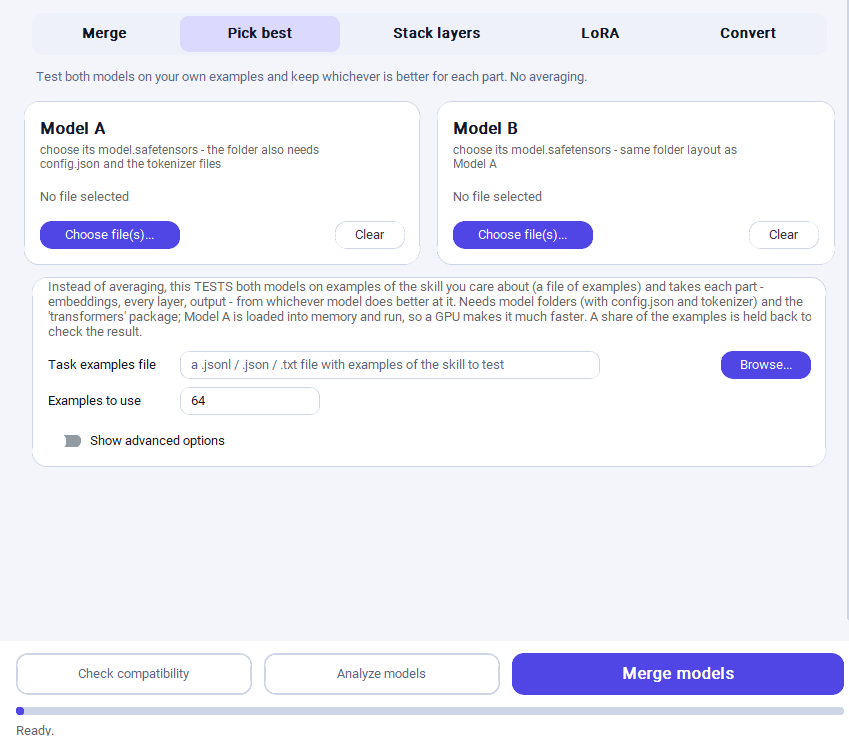
The Pick best tab.
Choose the model.safetensors of Model A and Model B. The folder next to each file also needs its config.json and the tokenizer files, and both models need the same folder layout.
Press Browse… next to Task examples file and choose a .jsonl, .json or .txt file with examples of the skill to test, such as questions and answers from your own subject.
Examples to use sets how many examples are used (64 is the default). A share of them is held back to check the result.
Press Check compatibility, then Merge models.
Use it when you have two models and one clear job, and you want the best of each for that job. Good to know: Model A is loaded into memory and run, so it needs more memory and is much faster on a GPU. In advanced options, Pick-best detail chooses between Whole layers and Attention and MLP separately (a finer choice). If this mode is not available in your copy of the app, the app tells you.
Stack layers tab: build a model from layer ranges
This builds a new model from ranges of layers taken from one or more models. It is often called a “frankenmerge”.
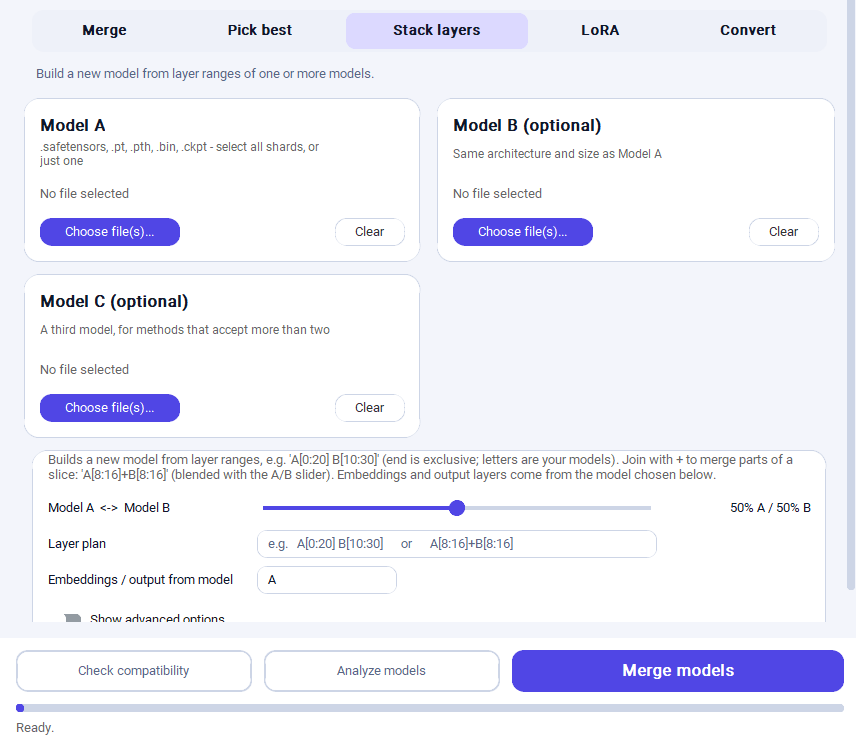
The Stack layers tab.
Choose Model A. Models B and C are optional. All models must have the same architecture and size.
Write a Layer plan. Letters are your models, and the numbers are the layers to use. The end number is not included. For example, A[0:20] B[10:30] takes layers 0 to 19 of Model A, then layers 10 to 29 of Model B, giving a model with 40 layers.
Join parts with + to blend them, using the slider. A[8:16]+B[8:16] blends those layers of A and B.
Embeddings / output from model says which model supplies the input and output layers. The default is A.
Press Check compatibility, then Merge models. The result tells you how many layers the new model has.
Use it when you want to experiment: make a deeper model, or take the early layers of one model and the late layers of another. Results can be unpredictable, so test the new model before relying on it.
LoRA tab: apply or extract adapters
A LoRA adapter is a small file that holds the changes of a fine-tune. This tab works with them in two ways. Pick one in the Action list.
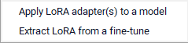
The Action list.
Apply LoRA adapter(s) to a model
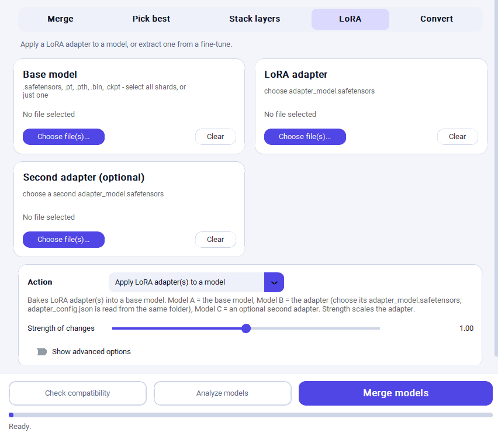
Applying an adapter.
This bakes the adapter into a base model, giving one complete model that no longer needs the adapter.
Base model: the model you want to change.
LoRA adapter: choose its adapter_model.safetensors. The adapter_config.json in the same folder is read automatically.
Second adapter (optional): a second adapter_model.safetensors to apply as well.
Strength of changes scales the adapter. 1.00 applies it fully, and lower values apply less of it.
Use it when you have a LoRA and want one standalone model.
Extract LoRA from a fine-tune
This creates a LoRA adapter that approximates what a fine-tune changed. Choose the fine-tuned model in the first box and its base model in the second box. LoRA rank (default 32) sets the quality: a higher rank is closer to the original but makes a bigger adapter. When it finishes, the app shows how many weight matrices were extracted and the average error. Use it when you want a small file that carries a fine-tune instead of a whole copy of the model.
Convert tab: re-save one model
This re-saves a single model (Model A only), as a .safetensors file, and can change its precision or scale its weights.
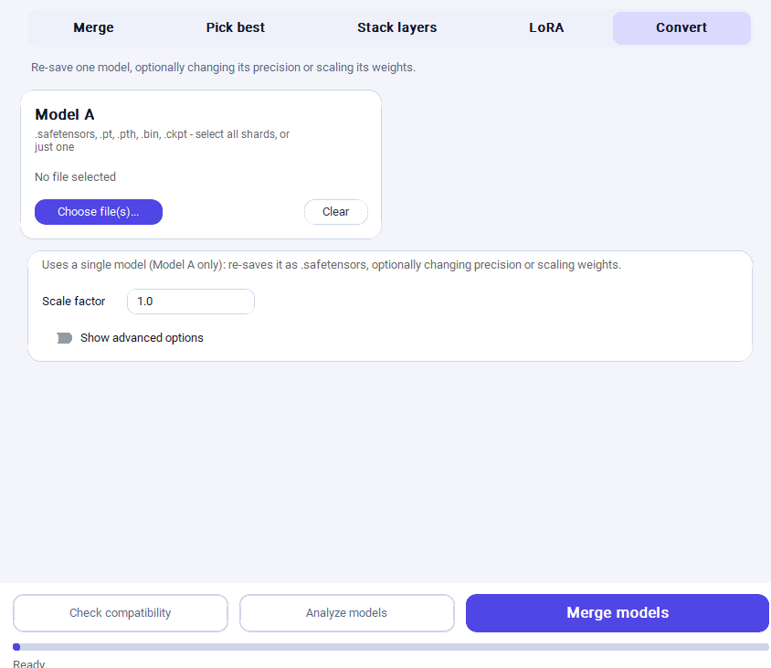
The Convert tab.
Choose Model A.
Leave Scale factor at 1.0 unless you know you want to scale the weights.
To make the file smaller, open Show advanced options and set Output precision to float16 or bfloat16. A float32 model becomes about half the size.
Press Merge models.
Use it when a model is in .pt, .pth, .bin or .ckpt format and you want .safetensors, or when you want a smaller file.
Advanced options
Switch on Show advanced options on the Merge tab to see these. You can ignore them at first.
Per-layer blend. Changes the mix from layer to layer. Typing 0, 0.5, 1 uses Model A in the early layers, a half mix in the middle, and Model B in the late layers. Works with SLERP, NuSLERP and Average.
Output precision.Keep original, float16, bfloat16 or float32. Lower precision makes smaller files.
Processor.Automatic uses your GPU if you have one. CPU only forces the CPU.
Keep from Model A and Take from Model B. Type part of a layer name, for example embed|lm_head, to keep those layers from Model A, or copy layers from Model B, without merging them.
Custom rules. One rule per line, to use a different method for different parts of the model. For example mlp=ties:density=0.3;lam=0.8 or attn=slerp:t=0.2.
Restore weight sizes after merging. Averaging can shrink the weights a little. This puts their size back.
Skip incompatible layers. Keeps Model A’s version of any layer that cannot be merged, instead of stopping.
Tips for good results
Always press Check compatibility before a long merge. It also tells you how big the result will be, so you know you have enough disk space.
Start simple: Average (linear) at 50%, or SLERP. Move on to the methods that need a base model when you have several fine-tunes of one base.
Test the merged model on your own tasks. If you do not like it, change the slider or the method and merge again. Each merge makes a new file, so earlier results are kept.
Closing other programs helps with big models. If the app says it ran out of memory, try smaller models.
Use Analyze models if you are not sure which method suits your models.